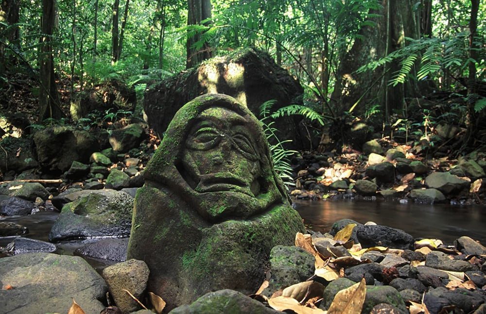
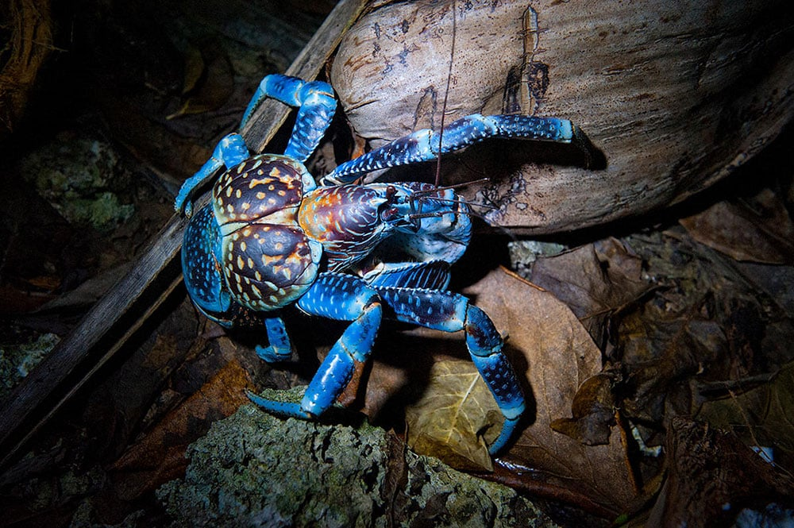
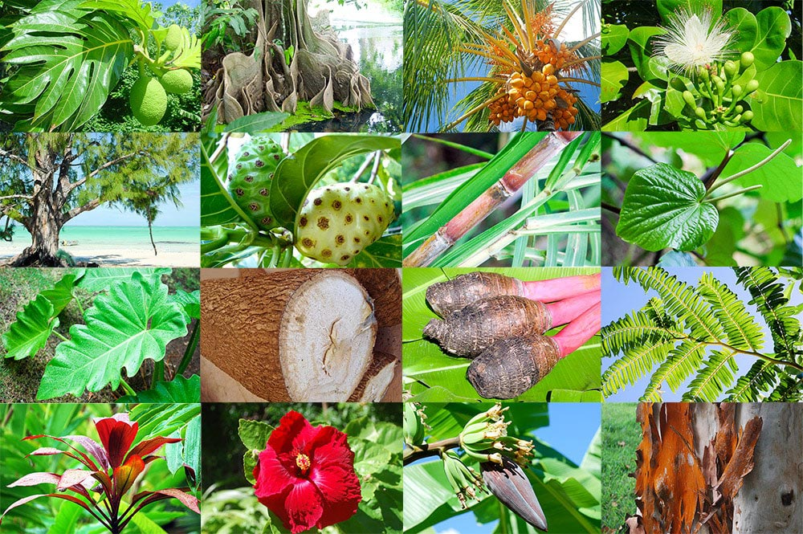
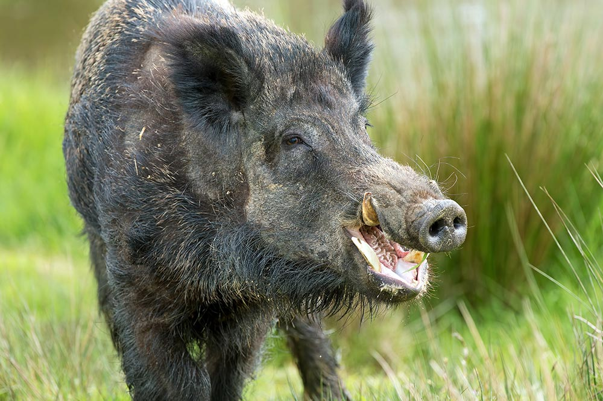

Explorez la beauté paradisiaque de nos contrées
Que l'on veuille se ressourcer, s'abriter de la chaleur ou simplement découvrir de nouveaux paysages, Tahiti propose des parcours adaptés ! Alors n'hésitez plus à enfiler vos chaussures de randonnée !
Des sentiers pour tous les aventuriers !
La riche topographie de Tahiti lui permet d'offrir des tracés variés dans leur intensité comme leur ambiance ! Gravissez les collines pour admirer un panorama à couper le souffle, faites semblant de vous perdre dans une forêt luxuriante, ou promenez vous simplement au bord du sable fin et de l'eau turquoise.
Nos tracés officiels sont balisés, avec une indication de la difficulté, des pistes de repli et la distance restante avant l'arrivée.


Une fresque aux mille couleurs !
Avec plus de 1000 espèces de plantes répertoriées, la nature luxuriante de Tahiti vous offre des tableaux chatoyants et fourmillants de détails. Plus de 6000 espèces d'animaux y vivent, vous offrant la perspective de rencontres charmantes au détour d'un écart.



Le Tiare est LA fleur typique de Tahiti, qui se distingue par une symbolique forte due à l'élégance de sa simplicité et la senteur délicate qu'elle dégage. Outre son identité comme emblème de Tahiti, la Gardenia taitensis de son nom scientifique est utilisée comme plante médicinale, huile de massage ou simplement élément décoratif. Vous la croiserez donc souvent lors de vos pérégrinations.
Planifier ses randonnées
De nombreux outils vous permettront d'organiser vos sorties en toute sérénité...
- OpenRunner: application listant tous les parcours
- Fédération Française de Randonnée : pour s'assurer de parer à toute éventualité